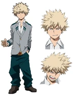

Кацуки Бакуго
Кацуки Бакуго (Каччан)
- Пол: ♂ Мужской
- Рост: 172 см.
- Группа крови: А
- Родился в: Японии
Кацуки Бакуго ( Bakugō Katsuki), или же Каччан (Kacchan), как называли его друзья детства (Каччан в официальном русском издании), является студентом Класса 1-A академии Юэй и дейтерагонистом манги.
-"Эй. Помнишь что я сказал, когда Шигараки сделал из меня швейцарский сыр? Я сказал, что тебе нужно перестать пытаться победить в одиночку. Но у меня есть что добавить. Я должен был сказать тебе, что мое тело двинулось само. Знаешь, я всегда презирал тебя за отсутствие квирка. Ты должен был быть ниже меня... Но я все время чувствовал, что ты надо мной ...... Я понимаю, что это врятли что-то изменит между нами, но я должен сказать... правду. Изуку... Прости меня за все."
Внешность
Кацуки обладает свойственной своему характеру внешностью. У него острые пепельно-блондинистые волосы, торчащие в разные стороны, оранжевые глаза, иногда кажущиеся красными, и постоянно нахмуренные брови. В средней школе он носил стандартную школьную форму, за исключением галстука. Под пиджаком он носил рубашку, которую никогда не застегивал полностью. Его брюки, несмотря на наличие ремня вечно находились в приспущенном состоянии, приобретая мешковатый вид.

Геройский костюм Кацуки состоит из чёрного комбинезона с перекрещенными на груди оранжевыми линиями. Он носит чёрные перчатки выше локтя, на которые надевает особые приспособления в бою; чёрные сапоги с оранжевыми вставками, зелёный пояс и железные наколенники. Также он носит необычное железное украшение с тремя отверстиями с каждой стороны у себя на шее. Кацуки надевает чёрную маску и прикрепляет к своей голове "колючее" украшение чёрного цвета с оранжевым отливом, имитирующее взрыв, подобно его волосам. Зимняя версия костюма отличается черной водолазкой с высоким воротником, на которой также изображены оранжевые отверстия.
Во время стажировки у Лучшего Дженсиста, Кацуки вместо привычных ему штанов носил джинсы, а его прическа была прилизана невероятным количеством геля и лака.
Личность
Кацуки Бакуго — грубый, высокомерный человек, который может показаться антигероем или даже злодеем для тех, кто видит его впервые.
Решительный и жаждущий только победы Кацуки всегда устрашающе улыбается во время боя. Он непоколебимо следует за своей мечтой. Кацуки пришлось научиться не недооценивать своих врагов, чтобы и дальше выходить победителем в битвах. Несмотря на характер, он очень талантлив и умен, что особенно заметно в моменты сражений, где он придумывает сложные стратегии и крайне резво управляется со своей причудой, используя ее не только в прямых и грубых атаках. Он держит одно из лидирующих мест по успеваемости в своем классе, что также говорит о его высоком интеллекте.
Причуда
 Чем больше Кацуки потеет, тем сильнее становятся его взрывы. До сих пор он использовал свою причуду через руки, обычно усиливая свои атаки за счет созданных взрывов. Самый мощный взрыв Кацуки до настоящего времени (без использования Гренадёрских Наручей) был в состоянии полностью уничтожить метеоритный дождь Очако, сбить её с ног и вызвать ударную волну, которая прошлась по стадиону. Благодаря своим обширным боевым навыкам и сообразительности, Кацуки сделал причуду смертельно опасной и универсальной.
Кацуки не страдает от последствий своих взрывов, за исключением мощной отдачи, которую он также стойко переносит, правда долгое использование причуды негативно сказывается на мышцах и суставах его рук.
Чем больше Кацуки потеет, тем сильнее становятся его взрывы. До сих пор он использовал свою причуду через руки, обычно усиливая свои атаки за счет созданных взрывов. Самый мощный взрыв Кацуки до настоящего времени (без использования Гренадёрских Наручей) был в состоянии полностью уничтожить метеоритный дождь Очако, сбить её с ног и вызвать ударную волну, которая прошлась по стадиону. Благодаря своим обширным боевым навыкам и сообразительности, Кацуки сделал причуду смертельно опасной и универсальной.
Кацуки не страдает от последствий своих взрывов, за исключением мощной отдачи, которую он также стойко переносит, правда долгое использование причуды негативно сказывается на мышцах и суставах его рук.